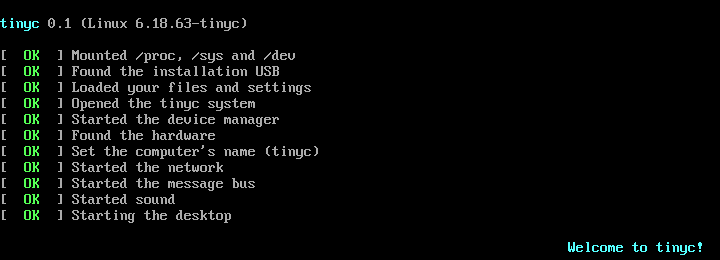
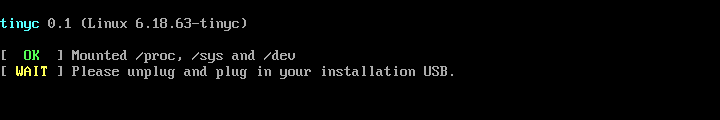
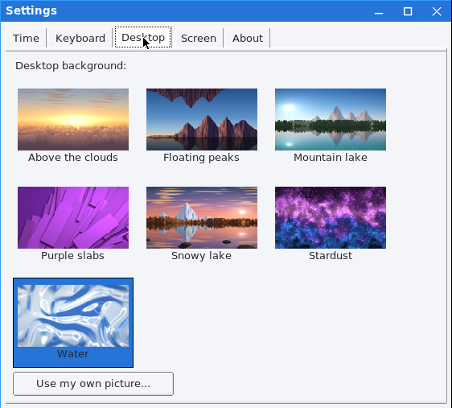

CcOS home > tinyCcOS > Docs
tinyCcOS docs
[ About | Docs | Download ]
Contents
- Starting tinyc
- The desktop
- Keyboard shortcuts
- Apps
- Wi-Fi
- Files and Notepad
- Settings
- What gets saved
- The Terminal
- Easy commands
- When things go wrong
- The 32-bit version
- Download tinyc (64-bit, or 32-bit for really old computers).
- Write the tinyc USB image to a USB stick of 2 GB or more with Rufus
(on Windows) or dd. Everything on the stick is erased.
- Restart the computer and open its boot menu (often F12, sometimes F9, F10, F11 or Esc at the logo) and pick the stick.
- A small menu shows for 3 seconds and tinyc starts by itself.
If the screen stays black, restart and pick tinyc (safe graphics).
While it starts, tinyc shows a line for each step:

The first start takes a bit longer: tinyc turns the empty rest of the stick into a place for your files
([ OK ] Made room for your files on the stick.).
"Please unplug and plug in your installation USB."

Some computers find USB sticks late. If tinyc can't find its stick, it waits on this line.
Unplug the stick and plug it back in: the line turns into [ OK ] and tinyc carries on to the desktop.
tinyc always needs its stick, so it waits until it finds it.
- /o\ (bottom left) opens the menu: Terminal, Files, Notepad, Apps, Wi-Fi, Settings, Programs
(everything you installed with Apps), Restart and Shut down.
- Next to it are quick buttons for Terminal, Files, Notepad and Apps.
- The middle of the taskbar shows your open windows. Click one to bring it up or hide it.
- Bottom right: the network icon (Wi-Fi bars, a plug for a cable, or a red x when not connected;
click it for the Wi-Fi window), the speaker (click for a volume slider, scroll on it for louder or quieter,
right-click to mute), the battery (on laptops) and the clock.
- Windows have the usual buttons: minimize, maximize and close. Double-click a title bar to maximize.
- Always use Shut down or Restart in the menu, so everything is written to the stick first.
| Keys | What it does |
|---|
| Ctrl + Esc | Open the /o\ menu |
| Alt + Tab | Switch windows |
| Alt + F4 | Close the window |
| Win + E | Files |
| Win + T | Terminal |
| Win + I | Settings |
| Volume keys | Volume up / down / mute |
| Brightness keys | Screen brighter / darker (laptops) |
| Ctrl + N / O / S | Notepad: new / open / save |
| Ctrl + F, F3 | Notepad: find, find next |

- Popular shows well-known apps by category. Type in Search to look through thousands more,
or pick All apps. Installed shows what you added.
- Click an app to see what it is and how big the download is (with everything it needs).
Click Install (or double-click it). When it's done, find it in /o\ > Programs.
- Remove takes an app away again. Parts of tinyc itself can't be removed.
- Apps needs the internet: connect with Wi-Fi or a cable first. The round arrow button gets the newest list.
- Big apps that need 3D graphics (Firefox, many games) download extra parts the first time (about 225 MB),
because tinyc leaves them out to stay small.
In the Terminal, the same thing is apk: apk search NAME, apk add NAME, apk del NAME.

- Open /o\ > Wi-Fi. It looks for networks by itself (Refresh looks again).
- Pick your network and click Connect (or double-click it), then type the password.
- tinyc remembers it ("saved") and connects by itself next time. Forget removes a saved network.
A network cable works straight away, with nothing to set up.
If it says "No Wi-Fi card found", your Wi-Fi chip needs a part tinyc doesn't include. Connect with a cable, open Apps,
search for linux-firmware and install the one for your chip (for example linux-firmware-brcm for Broadcom,
linux-firmware-mediatek for MediaTek), then restart.
In the Terminal, Wi-Fi is iwctl: iwctl station wlan0 get-networks, iwctl station wlan0 connect NAME.
- Files opens your home folder. Your Documents folder is there. Double-click to open things;
right-click for copy, paste, rename and delete. Deleted files go to the Trash can on the left.
- USB sticks and drives open by themselves when you plug them in: they show up under Mount Points
on the left as /media/NAME. Before pulling one out, close anything using it and wait a moment.
- Notepad writes plain text. It saves in Documents and asks before closing if something isn't saved.
View > Word wrap, Bigger text and Smaller text change how it looks.

Open /o\ > Settings (or Win + I). Everything you change is kept on the stick.
- Time: pick your time zone (type a city to find it). Set the time from the internet keeps the clock right
by itself whenever you're online. Tick Windows is on this computer too if the computer also has Windows,
so the clock is right in both.
- Keyboard: your keyboard layout (Polish, US, German, French and many more). There's a box to try it out.
- Desktop: the background picture. Pick one of tinyc's, or Use my own picture...
- Screen: brightness (on laptops) and the screen size.
- About: the tinyc version, the processor, memory and free space on the stick.
Everything you change is kept on the stick: your files, settings, saved Wi-Fi networks and installed apps.
tinyc itself stays untouched underneath, on the stick's first part.
- Always shut down from the menu, so nothing is lost.
- To start completely fresh, write the stick again. This erases all your files and apps, so copy
what you want to keep to another drive first.
- Windows may offer to format the stick when you plug it in. Say no.
tinyc's Terminal is real Linux (bash). It also has CcOS's easy commands.
help lists the useful commands. These are the usual Linux ones you'll use most:
| Command | What it does |
|---|
| ls | List the files here (ls -l with sizes) |
| cd FOLDER | Go into a folder (cd .. goes up, cd goes home) |
| pwd | Show where you are |
| cat FILE | Show what's in a file |
| nano FILE | Edit a file (Ctrl+O saves, Ctrl+X quits) |
| cp A B, mv A B | Copy, move or rename |
| rm FILE | Delete for good (no Trash can!) |
| mkdir NAME | Make a folder |
| echo hi > a.txt | Make a file with text in it |
| df -h, free -m | Free space, free memory |
| ip a, ping -c 3 alpinelinux.org | Network addresses, is the internet working? |
| apk add NAME | Install an app (like Apps) |
| amixer set Master 80% | Set the volume |
| startx | Start the desktop again (if it stopped) |
| tinyc-power off, tinyc-power reboot | Shut down, restart |
Any command followed by --help shows how to use it, for example cp --help.

The same easy commands as CcOS. Each one also shows the usual Linux way of doing the same thing in grey,
so you learn the real commands as you go. hints off hides those grey lines, hints on brings them back.
Names with spaces are fine: rd my list.txt.
| Command | What it does |
|---|
| mkf hi.txt | Make an empty file |
| mkf hi.txt : hello! | Make a file with text in it. \n starts a new line: mkf list.txt : milk \n eggs |
| rd hi.txt | Read a file |
| adf hi.txt : more text | Add text to the end of a file |
| rn old.txt : new.txt | Rename |
| cpf photo.png : usb1 | Copy (to a USB stick, a folder, or a new name) |
| rmt hi.txt | Put it in the Trash (on a USB stick it asks first, then deletes for good) |
| op hi.txt | Open it in its program (text in Notepad, folders in Files) |
| lsusb | Your USB sticks, as usb1, usb2... |
| cdusb usb1, xusb | Go into a USB stick, leave it |
| jusb usb1 | Eject a USB stick safely |
| space | Free space on the stick, USB sticks and memory |
| net | Is the internet working? |
| whereami | Where you are, in words |
- The screen stays black when it starts
- Restart and pick tinyc (safe graphics) in the menu that shows for 3 seconds.
- It waits on "Please unplug and plug in your installation USB." forever
- Try another USB port (on the back of a desktop PC, or a USB 2 port). Make sure it's the tinyc stick.
- "Couldn't make room for your files on the stick"
- The stick is too small. tinyc needs at least 1 GB of free space after itself, so use a 2 GB stick or bigger.
- "[ FAIL ] The desktop stopped."
- Type startx to start it again, or tinyc-power reboot to restart.
- An app won't install
- Check the internet first (Wi-Fi window, or ping -c 3 alpinelinux.org in the Terminal), then click the round arrow in Apps and try again.
- No Wi-Fi card found
- See Wi-Fi: your chip needs an extra part from Apps.
- The clock is wrong
- Check the time zone in Settings. If the computer also has Windows, tick
Windows is on this computer too.
Really old computers (Pentium 4, Pentium M, the first Atom netbooks) can't run 64-bit programs.
For them there's a separate 32-bit tinyc stick. It's the same tinyc, just built for 32-bit.
- It needs a processor with SSE2 (almost everything from about 2003 on) and 256 MB of memory.
- It starts on old BIOS computers and on 32-bit UEFI (some netbooks and cheap tablets).
On a 64-bit computer, use the normal tinyc.
- Apps installs 32-bit apps. Most apps exist for 32-bit too, but a few big ones don't.
- Old Intel Wi-Fi (Intel PRO/Wireless 2200 and 2915, in Pentium M "Centrino" laptops) doesn't work
out of the box: use a cable or a USB Wi-Fi stick.
tinyCcOS · written for tinyc 0.1 beta